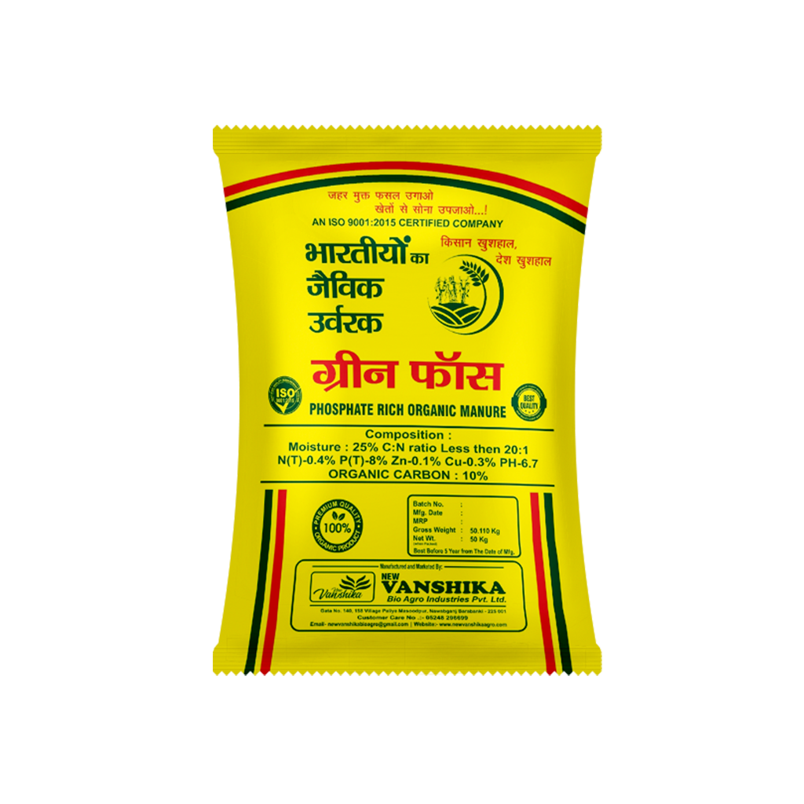

Organic Manure
Green Phosh Organic Fertilizers and Manure
₹21.60 / Kg
Green Phosh Organic Fertilizers and Manure is a flakes-form organic manure product in the organic manure range. It is listed for soil application with 50 kg packing.